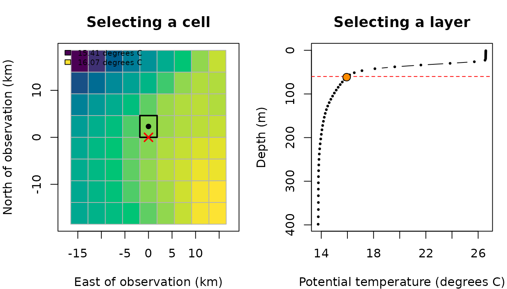

Extracting environmental data at observation points
Source:vignettes/articles/extracting-environmental-data-at-points.Rmd
extracting-environmental-data-at-points.RmdMarine observations often come with a geographical location, a depth and a date. These may describe an animal location recorded by a tracking device, an observation from a baited remote underwater video system (BRUV), a fishing operation or another type of marine survey. In each case, we may know where and when an observation was recorded but still need to identify its associated environmental conditions.
An environmental dataset rarely contains a measurement at precisely the same coordinates, depth and instant. Instead, it provides values on a grid, at particular depth levels and timestamps. Before assigning a temperature to an observation, we therefore need to decide which of these values represents the observation’s conditions.
What environmental conditions correspond to each fishing observation, and how do our selection rules affect the answer?
In this tutorial, we will use extract_to_point() and its
convenience functions to answer this question. We will follow one
observation through the horizontal, vertical and temporal selections,
then extend the workflow to several observations and netCDF files.
Our research question
Imagine we have a small table of fishing records. For each record, we know:
- Its longitude and latitude, in decimal degrees.
- Its recorded depth, in metres below the reference surface.
- Its date and time, with a known time zone.
We would like to add potential temperature at the nearest valid depth, compare this with surface and deeper conditions, and understand where the returned values came from.
The fishing records below are fictional teaching observations. The temperatures are real modelled values from a small Copernicus Marine subset. No external downloads or credentials are needed to run this article.
A point selection describes the recorded location, rather than the full extent of a longline or the path of a trawl. If our question concerns conditions throughout a surrounding volume and time window, the buffer extraction tutorial provides a complementary workflow.
Getting started: preparing our data
The example files accompany this article in the repository’s
vignettes/articles/point-data/ directory. To run the code
manually, use vignettes/articles/ as your working
directory, as when building the article.
library(ocean3d)
# Locate the small real-data subset supplied with this article.
example_dir <- "point-data"
nc_file <- file.path(example_dir, "temperature-points.nc")
# Load the article's display data and plotting helpers.
example <- readRDS(file.path(example_dir, "point-display.rds"))
source(file.path(example_dir, "figures.R"))The plotting helpers are specific to this article; they are not
exported ocean3d functions. All environmental extractions
below use the netCDF files directly.
We begin by creating our observation table. Depths are positive downwards. We use UTC explicitly, preserving the instants recorded in the date column.
observations <- data.frame(
record = c("set_A", "set_B", "set_C"),
lon = c(0, 0.08, -0.08),
lat = c(38, 38.04, 38.06),
depth = c(60, 100, 200),
date = as.POSIXct(
c("2026-09-20 00:00:00", "2026-09-20 00:00:00", "2026-09-21 00:00:00"),
tz = "UTC"
)
)
observations
#> record lon lat depth date
#> 1 set_A 0.00 38.00 60 2026-09-20
#> 2 set_B 0.08 38.04 100 2026-09-20
#> 3 set_C -0.08 38.06 200 2026-09-21Our example file contains thetao, potential temperature
at 50 depth levels, and bottomT, the source product’s
temperature-at-the-seafloor variable without a vertical dimension. Both
vary with time. An additional artificial cell_id variable
is included only to demonstrate static extraction; it is not an
environmental measurement.
Step 1: Following one observation into the environmental grid
Let’s focus first on set_A: longitude 0 degrees,
latitude 38 degrees, depth 60 m, at midnight UTC on 20 September
2026.
one <- observations[1, ]Its coordinates identify a point. The environmental values, however, are stored at cell centres and discrete depth levels.
plot_point_context(example)
Figure 1. Following our observation into the dataset. Left: the red cross marks the requested point, the black dot marks the selected cell centre, and the outline identifies the cell containing the observation. Colours show temperature at the layer nearest 60 m on 20 September. Right: the vertical profile at that selected cell and timestamp. The red line marks 60 m and the orange point identifies the nearest valid layer. Lines join the profile points for visual guidance; extraction does not interpolate between them. Coordinates are local distances around 0 degrees E, 38 degrees N.
Step 2: Extracting our first temperature
We can request the valid depth layer closest to our observation using
extract3d_nearest().
nearest <- extract3d_nearest(
data = one,
nc = nc_file,
var = "thetao",
output_col = "temperature",
id_col = "record"
)
nearest
#> record lon lat depth date temperature
#> 1 set_A 0 38 60 2026-09-20 15.9467The original row is retained and a new column contains its selected
temperature. output_col lets us choose that column’s name;
id_col adds the observation identifier to diagnostic
messages when needed.
The convenience function calls the general function with
method = "nearest". The following request gives the same
result:
general <- extract_to_point(
data = one,
nc = nc_file,
var = "thetao",
method = "nearest",
output_col = "temperature",
id_col = "record"
)
all.equal(nearest, general)
#> [1] TRUEHere, “nearest” refers to depth. The horizontal and
temporal rules are separate arguments: spatial_match and
time_match.
Step 3: Understanding the horizontal selection
By default, spatial_match = "within" requires the point
to lie inside a grid cell. It does not require the point to coincide
with its centre. The reported distance to that centre can therefore be
nonzero even for a normal, accepted selection.
Let’s ask explicitly for the spatial and depth reports:
extract3d_nearest(
data = one,
nc = nc_file,
var = "thetao",
output_col = "temperature",
spatial_report = TRUE,
depth_report = TRUE
)
#> Spatial selection: 1 observation matched the requested selection.
#> 1 output value reported.
#>
#> Row 1 · netCDF variable: thetao · output column: temperature
#> Requested: (0, 38) → containing cell centre: (0, 37.97917)
#> Distance: 2.32 km.
#> File: temperature-points.nc
#> Depth selection: 1 observation matched the requested selection.
#> 1 output value reported.
#>
#> Row 1 · netCDF variable: thetao · output column: temperature
#> Requested: 60 m → selected: 61.52 m (1.52 m deeper).
#> No vertical interpolation.
#> Surrounding layers: 56.33–61.52 m (5.19 m apart).
#> File: temperature-points.nc
#> record lon lat depth date temperature
#> 1 set_A 0 38 60 2026-09-20 15.9467These messages explain the selection without changing the returned
value. Unlike extract_to_buffer(), the point functions do
not add a *_match_info list column; their selection
diagnostics appear as reports and warnings.
3.1. What happens outside the grid?
The supplied subset is intentionally small. A point can lie just outside its coverage while still being close to a cell in that subset.
point_explorer(example, "horizontal", file.path(example_dir, "explorer.js"))Figure 2. Exploring horizontal selection. Choose the point inside or just outside the cropped grid. With “Within a cell”, an outside point is rejected. With “Nearest cell centre”, it is accepted only when the distance is within the chosen limit. The red cross marks the observation; an accepted cell is outlined and connected to its centre. Each menu combination displays a result and messages calculated by the public R function, rather than recalculating selection in the browser. The crop boundary is an example-data boundary, not a coastline or the full extent of the original Copernicus product.
We can make these two requests directly in R:
outside <- one
outside$lon <- example$locations$lon[2]
# Default: the point must be inside a cell.
extract3d_nearest(outside, nc_file, var = "thetao")
#> Spatial selection: 1 observation had no value extracted.
#> 1 output value affected; 1 missing.
#>
#> Row 1 · netCDF variable: thetao · output column: thetao
#> Point outside cell coverage (within matching).
#> File: temperature-points.nc
#> Result: NA.
#> record lon lat depth date thetao
#> 1 set_A 0.2175002 38 60 2026-09-20 NA
# Alternative: allow the nearest cell centre up to 20 km away.
extract3d_nearest(
outside, nc_file, var = "thetao",
spatial_match = "nearest", max_distance_km = 20
)
#> Spatial selection: 1 observation outside cell coverage used the nearest cell.
#> 1 output value affected.
#>
#> Row 1 · netCDF variable: thetao · output column: thetao
#> Requested: (0.2175, 38) → nearest cell centre: (0.16667, 38.02083)
#> Distance: 5.02 km; allowed: 20 km.
#> File: temperature-points.nc
#> record lon lat depth date thetao
#> 1 set_A 0.2175002 38 60 2026-09-20 16.00149max_distance_km is required for nearest spatial
matching. It is measured from the requested point to the cell centre,
not to its nearest edge. It must be omitted with
spatial_match = "within".
Selecting a cell whose value is missing does not initiate a search for a different horizontal cell in the same file. This is different from nearest-depth selection, which considers valid values in the vertical profile.
Step 4: Choosing a depth selection
Different research questions call for different parts of the water column. Let’s obtain our nearest, surface and deepest-valid temperatures together.
all_depths <- extract3d_all(
data = one,
nc = nc_file,
var = "thetao",
output_col = "temperature"
)
all_depths
#> record lon lat depth date nearest_temperature surface_temperature
#> 1 set_A 0 38 60 2026-09-20 15.9467 26.52825
#> seabottom_temperature
#> 1 13.79936This adds nearest_temperature,
surface_temperature and seabottom_temperature.
The last name follows the existing output naming convention; it does not
establish the location of the real seabed.
| Function | Selection |
|---|---|
extract3d_nearest() |
Valid layer closest to the requested depth; a depth tie selects the shallower layer. |
extract3d_surface() |
Physically shallowest layer, even if its value is missing. |
extract3d_bottom() |
Deepest layer with a valid value in the selected profile. |
extract3d_all() |
All three selections above. |
extract2d() |
Variable without a depth dimension, or with one depth layer. |
extract_to_point() |
General interface using method = "nearest",
"surface", "bottom", "all" or
"2d". |
We can obtain surface and deepest-valid values separately as well.
surface <- extract3d_surface(one, nc_file, var = "thetao", output_col = "surface")
bottom <- extract3d_bottom(one, nc_file, var = "thetao", output_col = "deepest_valid")
data.frame(surface = surface$surface, deepest_valid = bottom$deepest_valid)
#> surface deepest_valid
#> 1 26.52825 13.79936Surface and bottom selection do not require an observation depth column. They are defined by the physical depth coordinates and valid values in the profile, rather than the order in which layers were stored.
point_explorer(example, "vertical", file.path(example_dir, "explorer.js"))Figure 3. Exploring depth selection. Compare the requested depth
with the available profile and change the selection method. In the 3D
view, the prisms show the selected cell’s temperature layers using
inferred boundaries for display only. The point extractor selects layer
values; it does not average these prisms. Depth is visually exaggerated,
and the temperature scale is fixed across dates. The 800 m request
illustrates nearest selection beyond the file’s depth range. Messages
are taken from the corresponding R call with
method = "all", so they can mention all three outputs even
when the display highlights only one.
Nearest selection is not interpolation, and it does not impose a maximum vertical distance. A request beyond the available depth range can return a distant valid layer. Automatic depth reports highlight unusually large displacements; the reader must still decide whether that selection is appropriate for the analysis.
Our subset retains all 50 original depth levels, down to
approximately 398.54 m. The deepest valid thetao value is
therefore the deepest value available in that profile, not necessarily a
measurement at the seabed.
4.1. Reading a variable without a depth dimension
The source also provides bottomT, a separate
temperature-at-the-seafloor variable. We use extract2d()
because that variable has no vertical axis. It still has a time axis and
therefore still requires a date.
provider_bottom <- extract2d(
data = one,
nc = nc_file,
var = "bottomT",
output_col = "provider_bottom_temperature"
)
data.frame(
deepest_valid_thetao = bottom$deepest_valid,
provider_bottom_temperature = provider_bottom$provider_bottom_temperature
)
#> deepest_valid_thetao provider_bottom_temperature
#> 1 13.79936 13.20377These columns need not be equal: one selects a layer from the
supplied thetao profile; the other reads the provider’s
separate bottomT variable.
Step 5: Matching observations to timestamps
Our first observation coincided with a dataset timestamp. In practice, observations often fall between records. Let’s move it to midday.
midday <- one
midday$date <- as.POSIXct("2026-09-20 12:00:00", tz = "UTC")
extract3d_nearest(
midday, nc_file, var = "thetao",
time_match = "nearest", time_resolution = "datetime"
)
#> Temporal report: 1 observation(s) have additional information.
#>
#> A value with a different timestamp was selected.
#> Row 1; variable: thetao; output: thetao.
#> Observation: 2026-09-20 12:00:00 UTC
#> Selected data: 2026-09-20 00:00:00 UTC
#> Difference: 12 hours earlier.
#> Comparison resolution: datetime.
#> Detected cadence: daily (one observed step is 24 hours).
#> The difference is within one observed sampling interval. No temporal warning is required.
#> File: temperature-points.nc
#> record lon lat depth date thetao
#> 1 set_A 0 38 60 2026-09-20 12:00:00 15.9467time_match = "nearest" chooses a temporal candidate;
"exact" requires equality at the chosen comparison
precision. The default nearest rule does not impose a maximum time gap.
Cadence detection informs diagnostics, not an automatic acceptance
limit.
point_explorer(example, "temporal", file.path(example_dir, "explorer.js"))Figure 4. Exploring temporal matching. Blue points are available
records, the red cross is the requested instant, and the orange diamond
is the value used for comparison. With daily precision, the comparison
uses the UTC calendar day. The selected record is outlined; if no
candidate satisfies the settings, the result is NA. Try the
midday request with exact datetime matching, then daily matching, and
finally nearest datetime matching with a 0.1-day limit. The displayed
temperature and messages come from R calls made when preparing the
example.
5.1. Limiting the accepted time gap
max_time_diff is in days, even for
datetime matching. For example, 0.1 days is 2.4 hours, so neither
neighbouring midnight satisfies this limit for our midday
observation.
extract3d_nearest(
midday, nc_file, var = "thetao",
time_resolution = "datetime", max_time_diff = 0.1
)
#> Temporal report: 1 observation(s) have additional information.
#>
#> No value was extracted.
#> Row 1; variable: thetao; output: thetao.
#> Observation: 2026-09-20 12:00:00 UTC
#> No timestamp satisfied the requested temporal settings.
#> File: temperature-points.nc
#> Result: NA.
#> record lon lat depth date thetao
#> 1 set_A 0 38 60 2026-09-20 12:00:00 NAThe result is NA with an explanation. To require the
same UTC day instead of the same instant, use exact daily matching:
extract3d_nearest(
midday, nc_file, var = "thetao",
time_match = "exact", time_resolution = "daily"
)
#> Temporal report: 1 observation(s) have additional information.
#>
#> A value with a different timestamp was selected.
#> Row 1; variable: thetao; output: thetao.
#> Observation: 2026-09-20 12:00:00 UTC
#> Selected data: 2026-09-20 00:00:00 UTC
#> Difference: 12 hours earlier.
#> Comparison resolution: daily.
#> Detected cadence: daily (one observed step is 24 hours).
#> The selected value remains within the requested daily calendar period. No temporal warning is required.
#> File: temperature-points.nc
#> record lon lat depth date thetao
#> 1 set_A 0 38 60 2026-09-20 12:00:00 15.9467This reads a record labelled on that day; it does not calculate a daily average. In calendar modes, the tolerance applies to the comparison values, rather than the original within-day time difference. Use datetime precision when an elapsed-time limit is required.
5.2. Preserving hours and time zones
With time_resolution = "auto", a Date or
date-only ISO string uses daily comparison. A
POSIXct/POSIXlt object or ISO date-time
retains the hour and uses datetime comparison. Auto follows the
observation’s precision, not the file’s sampling frequency.
Let’s represent the original midnight UTC observation in Madrid time.
local_time <- one
local_time$date <- as.POSIXct("2026-09-20 02:00:00", tz = "Europe/Madrid")
utc_result <- extract3d_nearest(one, nc_file, var = "thetao", time_match = "exact")
local_result <- extract3d_nearest(local_time, nc_file, var = "thetao", time_match = "exact")
data.frame(utc = utc_result$thetao, madrid = local_result$thetao)
#> utc madrid
#> 1 15.9467 15.9467These represent the same instant and return the same value. Calendar labels are compared in UTC, so a local date can correspond to the previous UTC day.
For text, use unambiguous ISO dates such as
"2026-09-20", or date-times such as
"2026-09-20T00:00:00Z". Date-time text without
Z is interpreted as UTC and generates a warning. Numeric
offsets and zone names in text are not accepted; construct a
POSIXct object with the intended zone instead. Resolve
ambiguous daylight-saving times when creating that object.
unspecified_zone <- one
unspecified_zone$date <- "2026-09-20 00:00:00"
# This warning is intentional: the text does not state a time zone.
extract3d_nearest(unspecified_zone, nc_file, var = "thetao", time_report = FALSE)
#> Warning: Time zone warning: 1 observation has times without a time zone.
#> Input: `data$date`. These times are being interpreted as UTC.
#> If they represent local time, supply POSIXct/POSIXlt values constructed with the correct time zone.
#> If they are UTC, add Z: "2020-01-02T19:54Z".
#> record lon lat depth date thetao
#> 1 set_A 0 38 60 2026-09-20 00:00:00 15.94675.3. Calendar labels and custom diagnostic intervals
The monthly and yearly modes compare labels; they do not combine records. Our daily dataset has several records in the same month and year. Reducing their precision would create an ambiguous selection, so the function rejects it rather than choosing the first or computing a mean.
extract3d_nearest(one, nc_file, var = "thetao", time_resolution = "monthly")
#> Error:
#> ! Multiple dataset timestamps map to the same 'monthly' comparison value. Selecting the first would discard information. Use a finer time_resolution, select the intended records, or aggregate the data explicitly before extraction.The yearly mode applies the same ambiguity rule. For actual summaries over several records, consider a temporal buffer instead.
The custom mode has a different purpose: it compares
full timestamps and lets us choose the displacement that should trigger
a diagnostic warning. For example, we might want to highlight a
displacement over three hours.
extract3d_nearest(
midday, nc_file, var = "thetao",
time_resolution = "custom",
custom_time_interval = as.difftime(3, units = "hours")
)
#> Warning: Temporal warning: 1 observation(s) need attention.
#>
#> The selected value exceeds your custom time interval.
#> Row 1; variable: thetao; output: thetao.
#> Observation: 2026-09-20 12:00:00 UTC
#> Selected data: 2026-09-20 00:00:00 UTC
#> Difference: 12 hours earlier.
#> Comparison resolution: custom.
#> Detected cadence: daily (one observed step is 24 hours).
#> Your custom warning interval is 3 hours. The selected value is further away than this interval. This warning does not reject the extracted value.
#> File: temperature-points.nc
#> record lon lat depth date thetao
#> 1 set_A 0 38 60 2026-09-20 12:00:00 15.9467This warns about the displacement but does not reject the candidate.
Use max_time_diff to enforce an acceptance limit.
Step 6: Extending the workflow to tables, variables and files
We can now apply the same rules to every observation in our table.
environment <- extract3d_nearest(
data = observations,
nc = nc_file,
var = "thetao",
output_col = "temperature",
id_col = "record"
)
environment
#> record lon lat depth date temperature
#> 1 set_A 0.00 38.00 60 2026-09-20 15.94670
#> 2 set_B 0.08 38.04 100 2026-09-20 15.01775
#> 3 set_C -0.08 38.06 200 2026-09-21 13.88106Rows and their order are retained. To add another variable, make
another call using the previous result as the input table. For point
extraction, an explicit var names one variable, not a
vector of variable names.
environment <- extract2d(
data = environment,
nc = nc_file,
var = "bottomT",
output_col = "bottom_temperature"
)
environment[, c("record", "temperature", "bottom_temperature")]
#> record temperature bottom_temperature
#> 1 set_A 15.94670 13.20377
#> 2 set_B 15.01775 13.19387
#> 3 set_C 13.88106 13.61041Choose distinct output names for different quantities. Existing
output columns of the same name are replaced, including by
NA; extraction inputs such as coordinates cannot be used as
output names. output_col is the preferred naming option and
overrides the older output_prefix.
6.1. A static variable does not need a date
The cell_id layer is an artificial static identifier
included for this teaching example. It has no time or depth dimension,
even though the same file also contains temporal, three-dimensional
temperatures.
locations <- observations[, c("record", "lon", "lat")]
extract2d(locations, nc_file, var = "cell_id", output_col = "grid_cell")
#> record lon lat grid_cell
#> 1 set_A 0.00 38.00 32
#> 2 set_B 0.08 38.04 43
#> 3 set_C -0.08 38.06 48The need for a date follows the selected variable, not the presence of a time dimension elsewhere in the file.
6.2. Selecting between files with one timestamp each
The example also includes two files containing only
thetao, one for 19 September and another for 21 September.
Let’s request the later date, first with the earlier file listed first,
then in the reverse order.
files <- file.path(example_dir, c(
"temperature-2026-09-19.nc",
"temperature-2026-09-21.nc"
))
later <- observations[3, ]
first_order <- extract3d_nearest(later, files, var = "thetao", output_col = "temperature")
reverse_order <- extract3d_nearest(later, rev(files), var = "thetao", output_col = "temperature")
data.frame(first_order = first_order$temperature, reverse_order = reverse_order$temperature)
#> first_order reverse_order
#> 1 13.88106 13.88106Both return the later timestamp’s value. The first listed file does not automatically win: temporal candidates are compared across eligible sources. Equal temporal distances are resolved by distance to the cell centre and then input order. Selection also depends on valid values. Input order can therefore matter in a complete tie.
These daily files each contain a single data variable, so automatic
variable detection is possible when var is omitted. The
main example file contains several variables and needs an explicit
choice.
extract3d_nearest(later, files, output_col = "temperature")
#> record lon lat depth date temperature
#> 3 set_C -0.08 38.06 200 2026-09-21 13.88106Step 7: Distinguishing missing observations from invalid requests
An explicit missing date is different from a missing column or an
invalid date string. Let’s keep both a valid row and a row whose date is
NA.
with_missing <- observations[1:2, ]
with_missing$date[2] <- NA
extract3d_nearest(with_missing, nc_file, var = "thetao", id_col = "record")
#> Temporal report: 1 observation(s) have additional information.
#>
#> No value was extracted.
#> Row 2; variable: thetao; output: thetao.
#> Observation: unavailable
#> No observation date was supplied, but this source has a time dimension; supply `date` or `date_col`.
#> File: temperature-points.nc
#> Result: NA.
#> record lon lat depth date thetao
#> 1 set_A 0.00 38.00 60 2026-09-20 15.9467
#> 2 set_B 0.08 38.04 100 <NA> NABoth rows remain in the output, but the second temperature is
NA. A static-variable extraction can still succeed for that
same row. Similarly, a missing requested depth leaves nearest-depth
output missing; with extract3d_all(), surface and bottom
outputs can still be available.
missing_depth <- one
missing_depth$depth <- NA_real_
extract3d_all(missing_depth, nc_file, var = "thetao", output_col = "temperature")
#> Depth selection: 1 observation had no value extracted.
#> 1 output value affected; 1 missing.
#>
#> Row 1 · netCDF variable: thetao · output column: nearest_temperature
#> Requested depth is missing; no nearest layer can be selected.
#> File: temperature-points.nc
#> Result: NA.
#> record lon lat depth date nearest_temperature surface_temperature
#> 1 set_A 0 38 NA 2026-09-20 NA 26.52825
#> seabottom_temperature
#> 1 13.79936If the date column is absent for a temporal variable, the request is invalid:
without_date <- one[, setdiff(names(one), "date")]
extract3d_nearest(without_date, nc_file, var = "thetao")
#> Error:
#> ! netCDF variable `thetao` has a time dimension.
#> File: temperature-points.nc
#> Column `date` is missing from `data`. Supply that column or set `date_col` to an existing date column.
#> An explicit NA date is allowed; a missing date input is not.A date written in an ambiguous format is invalid as well:
invalid_date <- one
invalid_date$date <- "20/09/2026"
extract3d_nearest(invalid_date, nc_file, var = "thetao", id_col = "record")
#> Error:
#> ! Time values could not be converted. Invalid date/time.
#> Input: `data$date`
#> Affected observations: 1.
#> row/position 1 (id: "set_A"): "20/09/2026"
#> Use Date, POSIXct/POSIXlt, YYYY-MM-DD, YYYY-MM-DD HH:MM or YYYY-MM-DD HH:MM:SS.
#> Text timestamps are interpreted in UTC. For another time zone, supply a POSIXct/POSIXlt object.The diagnostic identifies the affected input, observation and
original value, and describes the admitted formats. Original
NA values are not conversion errors. A limited number of
examples is shown for large inputs.
Spatial settings can also be incomplete. Nearest spatial selection needs an explicit limit:
extract3d_nearest(outside, nc_file, var = "thetao", spatial_match = "nearest")
#> Error:
#> ! Nearest spatial matching requires one finite, non-negative max_distance_km value. For example, use max_distance_km = 5 for five kilometres.These errors are intentionally printed in this tutorial. They show requests that need correction, rather than conditions to solve by silently increasing the search distance or time tolerance.
For other datasets, also inspect the coordinate metadata. Depths
stored in supported metre, centimetre or kilometre units are converted
to physical metres, with their positive direction taken into account.
Pressure, sigma and formula-based vertical coordinates need an explicit
conversion rather than being treated as metre depths. Nonstandard time
calendars likewise need compatible handling; see
extract_to_point() for supported cases.
7.1. Choosing how much diagnostic information to display
Normal within-cell and nearby nearest-depth selections are silent by
default. spatial_report = TRUE and
depth_report = TRUE request full reports;
FALSE hides the respective report. Their default
NULL mode highlights missing outputs and selections that
need attention.
time_report = TRUE explains temporal displacements and
missing outputs. Setting it to FALSE hides the summary, but
not temporal warnings. Likewise, a warning about a missing text time
zone remains active. Changing report switches does not change the
extracted values.
For many observations, reports show only a limited number of cases and state when examples have been omitted. A displayed warning is an invitation to examine the selection and its suitability, not necessarily a software error.
Step 8 (extra): Adapting the input to our own workflow
8.1. Custom observation-column names
custom <- one
names(custom) <- c("operation", "longitude", "latitude", "fishing_depth", "when")
extract3d_nearest(
custom, nc_file, var = "thetao",
lon_col = "longitude", lat_col = "latitude", depth_col = "fishing_depth",
date_col = "when", id_col = "operation", output_col = "temperature"
)
#> operation longitude latitude fishing_depth when temperature
#> 1 set_A 0 38 60 2026-09-20 15.9467For nonstandard netCDF dimension names, lon_dim,
lat_dim, depth_dim and time_dim
provide explicit overrides. These refer to file dimensions, whereas the
*_col arguments refer to observation columns.
8.2. Direct coordinates and scalar recycling
The general function can also receive coordinate vectors without an observation table. A scalar depth or date can be recycled across points.
extract_to_point(
nc = nc_file, var = "thetao", method = "nearest",
lon = c(0, 0.08), lat = c(38, 38.04), depth = 60,
date = as.POSIXct("2026-09-20", tz = "UTC"), output_col = "temperature"
)
#> [1] 15.94670 15.982648.3. Spatial objects and file tables
An sf input retains its POINT geometry:
spatial_observations <- sf::st_as_sf(observations, coords = c("lon", "lat"), crs = 4326)
extract3d_nearest(spatial_observations, nc_file, var = "thetao")
#> Simple feature collection with 3 features and 6 fields
#> Geometry type: POINT
#> Dimension: XY
#> Bounding box: xmin: -0.08 ymin: 38 xmax: 0.08 ymax: 38.06
#> Geodetic CRS: WGS 84
#> record depth date geometry lon lat thetao
#> 1 set_A 60 2026-09-20 POINT (0 38) 0.00 38.00 15.94670
#> 2 set_B 100 2026-09-20 POINT (0.08 38.04) 0.08 38.04 15.01775
#> 3 set_C 200 2026-09-21 POINT (-0.08 38.06) -0.08 38.06 13.88106Files can be supplied as a table with a named path column:
file_table <- data.frame(path = files)
extract3d_nearest(later, file_table, var = "thetao", file_col = "path")
#> record lon lat depth date thetao
#> 3 set_C -0.08 38.06 200 2026-09-21 13.88106Data frames, matrices with column names and named lists are also supported. If using a matrix, remember that combining different types can convert columns to text; longitude and latitude must remain numeric at extraction.
8.4. A connection owned by the caller
An already opened ncdf4 connection remains usable after
extraction. The caller is responsible for closing it.
local({
connection <- ncdf4::nc_open(nc_file)
on.exit(ncdf4::nc_close(connection))
result <- extract3d_nearest(one, connection, var = "thetao")
print(ncdf4::ncatt_get(connection, "thetao", "units"))
result
})
#> $hasatt
#> [1] TRUE
#>
#> $value
#> [1] "degrees_C"
#> record lon lat depth date thetao
#> 1 set_A 0 38 60 2026-09-20 15.9467Summary
We have assigned environmental values to fishing observations and traced how each request selects a cell, depth layer and timestamp. Along the way, we have:
- Used the general point function and all five convenience functions.
- Distinguished within-cell selection from an explicitly limited nearest-cell search.
- Compared nearest, surface and deepest-valid layers without interpolation.
- Preserved observation hours and time zones, and applied explicit temporal limits.
- Combined files, named outputs and distinguished missing values from invalid inputs.
The complete basic workflow remains short:
result <- extract3d_nearest(
data = observations,
nc = nc_file,
var = "thetao",
time_match = "nearest",
time_resolution = "datetime",
max_time_diff = 1,
output_col = "temperature",
id_col = "record"
)The one-day time limit is an example choice, not a universal recommendation. Choose settings that match the meaning and precision of your observations.
Next steps
- See
extract_to_point()for supported coordinates, calendars and detailed selection rules. - Explore the buffer tutorial when the question concerns a surrounding space and time window.
- Return to Getting started with ocean3d to explore species’ three-dimensional distributions.
Data sources and reproducibility
The temperature subset comes from Mediterranean Sea Physics
Reanalysis, product MEDSEA_MULTIYEAR_PHY_006_004,
dataset cmems_mod_med_phy-temp_my_4.2km_P1D-m_202511,
downloaded on 19 October 2026. The original temperature values and all
50 downloaded depth levels are retained, with a small spatial crop and
three selected dates. The two daily files contain subsets of those same
original values. The fishing records and static cell_id
field are explicitly artificial teaching data.
E.U. Copernicus Marine Service Information; https://doi.org/10.48670/mds-00375. Source temperatures remain subject to the Copernicus Marine Service licence. The tutorial does not imply endorsement by Copernicus Marine or CMCC.
The repository’s data-raw/point-article.R
recreates the files and display data. It checks the cropped extraction
against the original for all three depth selections and stores results
and messages from the public functions for every interactive menu
combination. The widget is an explorer of these finite examples, not a
general-purpose replacement for running the extraction in R.
All arguments and defaults
Expand or collapse the complete extract_to_point() signature
This signature is generated from the current function. Arguments without a default require input. A vector lists alternatives with the default first; choose one alternative when calling the function.
extract_to_point(
# Data and sources
data = NULL, nc, var = NULL,
# Direct observation coordinates
lon = NULL, lat = NULL, depth = NULL, date = NULL,
# Depth selection
method = c("2d", "surface", "bottom", "nearest", "all"),
# Observation and output columns
lon_col = "lon", lat_col = "lat", depth_col = "depth", date_col = "date",
output_col = NULL, output_prefix = NULL, id_col = NULL,
# Source columns and dimensions
file_col = "file", lon_dim = NULL, lat_dim = NULL, depth_dim = NULL,
time_dim = NULL,
# Temporal selection
time_match = c("nearest", "exact"),
time_resolution = c("auto", "datetime", "daily", "monthly", "yearly", "custom"),
custom_time_interval = NULL, max_time_diff = NULL,
# Spatial selection
spatial_match = c("within", "nearest"), max_distance_km = NULL,
# Diagnostics and messages
return_match_info = FALSE, time_report = TRUE, spatial_report = NULL,
depth_report = NULL, verbose = FALSE
)| Decision | Choices, meaning and effective default |
|---|---|
| Input and variables |
data = NULL uses direct lon/lat/depth/date
inputs; supply a table or sf points instead. Direct inputs default to
NULL; dates are required only for temporal variables. nc is
required; var = NULL detects variables or accepts explicit
names. |
method |
"2d" has no depth selection;
"nearest" selects the closest valid layer to the requested
depth; "surface" selects the physically shallowest layer;
"bottom" selects the deepest valid layer. Default:
"2d". "all" returns surface, bottom and
nearest outputs. |
| Convenience functions | extract2d, extract3d_surface, extract3d_bottom and extract3d_nearest fix the corresponding method and forward point options. |
spatial_match |
spatial_match = "within" (default) selects
containing cells on point-selected axes; "nearest" allows a
nearby cell only within an explicit max_distance_km. That
distance limit defaults to NULL. |
time_match |
"nearest" (default) chooses the nearest
eligible timestamp or calendar label; "exact" requires the
requested timestamp or label. max_time_diff = NULL has no
additional time-distance limit; a nonnegative value limits it in
days. |
time_resolution |
"auto" follows observation precision;
"datetime" preserves instants; "daily",
"monthly", "yearly" compare UTC calendar
labels. "custom" keeps full timestamps and requires a
positive difftime custom_time_interval as a displacement
warning threshold; it does not reject candidates. Default:
"auto"; custom_time_interval defaults to NULL. No averaging
is performed. |
| Missing dates | A selected static variable needs no date. A temporal variable requires the date input or column. An explicit NA preserves the row and returns a missing value. |
| Input and source names |
lon_col, lat_col,
depth_col, date_col default to lon, lat,
depth, date. id_col = NULL means no ID column;
file_col = "file" names the source-table path column.
Dimension names default to NULL (detect); set lon_dim, lat_dim,
depth_dim or time_dim to override. |
| Output names |
output_col = NULL chooses names
automatically; supply explicit names to override.
output_prefix = NULL adds no prefix; supply text to add
one. Requested coordinates are retained; selected centres are separate
diagnostics. |
| Reports |
time_report = TRUE (default) reports
temporal selections needing explanation; FALSE hides it.
spatial_report / depth_report: NULL (default)
reports exceptional selections, TRUE adds routine detail, FALSE hides
that report. |
| Diagnostics |
return_match_info = FALSE (default) omits
detailed provenance; TRUE adds actual source, coordinates, depth and
timestamp per output for table input. verbose = FALSE
(default) suppresses progress detail; TRUE shows it. |
See extract_to_point()
for accepted formats, units, matching limits and the full output
description.